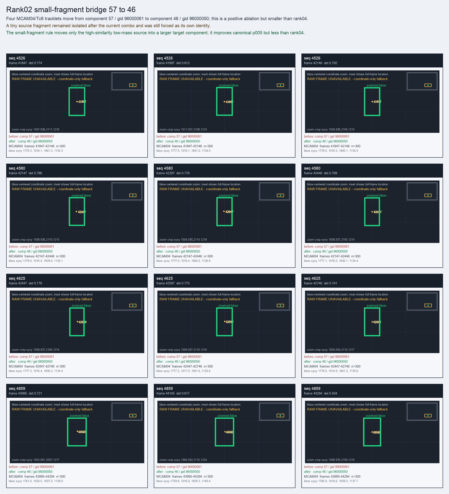

Rank02 small-fragment bridge 57 to 46
Four MCAM04/Tc6 tracklets move from component 57 / gid 96000061 to component 46 / gid 96000050; this is a positive ablation but smaller than rank04.
Before
component 57, gid 96000061, component_size 4
component 57, gid 96000061, component_size 4
After
component 46, gid 96000050, component_size 122, decision_status manifest_reassign
component 46, gid 96000050, component_size 122, decision_status manifest_reassign
Evidence
target_sim=0.5259, target_margin=0.2869, source_rest_margin=0.2869
Raw frame
unavailable_coordinate_fallback
target_sim=0.5259, target_margin=0.2869, source_rest_margin=0.2869
Raw frame
unavailable_coordinate_fallback
Failure and fix
Old failure: A tiny source fragment remained isolated after the current combo and was still forced as its own identity.
New implementation: The small-fragment rule moves only the high-similarity low-mass source into a larger target component; it improves canonical p005 but less than rank04.
BBox evidence

Moved tracklets
| seq | video | gid | component | frames | dets |
|---|---|---|---|---|---|
| 4526 | vlincs_MS01_MC0001_MCAM04_2024-03-Tc6 | 96000061 -> 96000050 | 57 -> 46 | 41847-42146 | 300 |
| 4580 | vlincs_MS01_MC0001_MCAM04_2024-03-Tc6 | 96000061 -> 96000050 | 57 -> 46 | 42147-42446 | 300 |
| 4625 | vlincs_MS01_MC0001_MCAM04_2024-03-Tc6 | 96000061 -> 96000050 | 57 -> 46 | 42447-42746 | 300 |
| 4859 | vlincs_MS01_MC0001_MCAM04_2024-03-Tc6 | 96000061 -> 96000050 | 57 -> 46 | 43995-44294 | 300 |